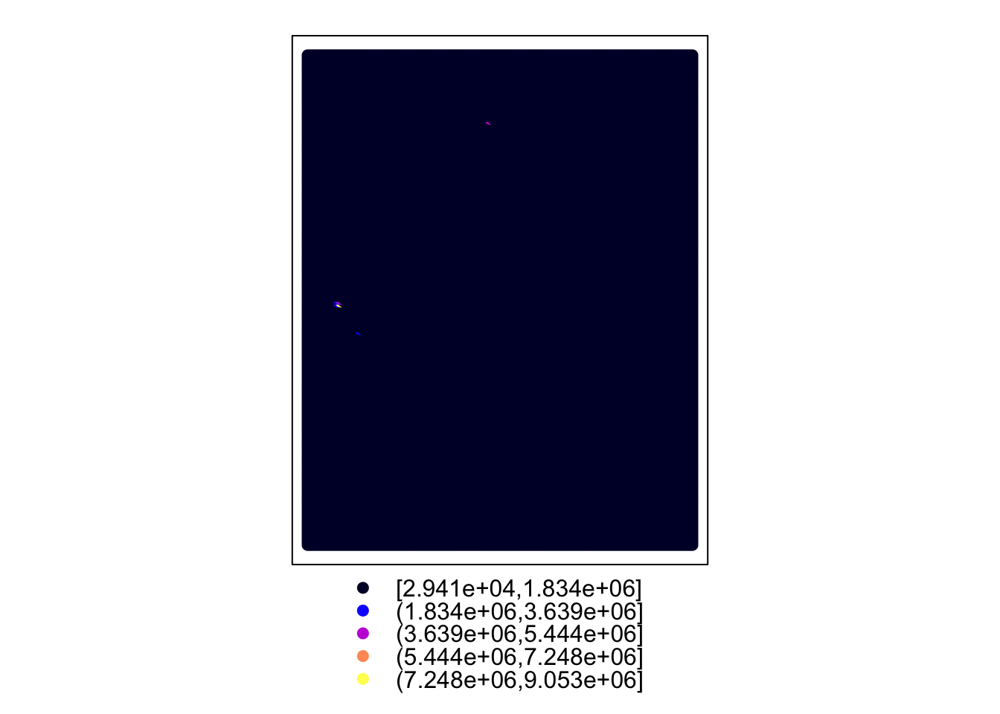
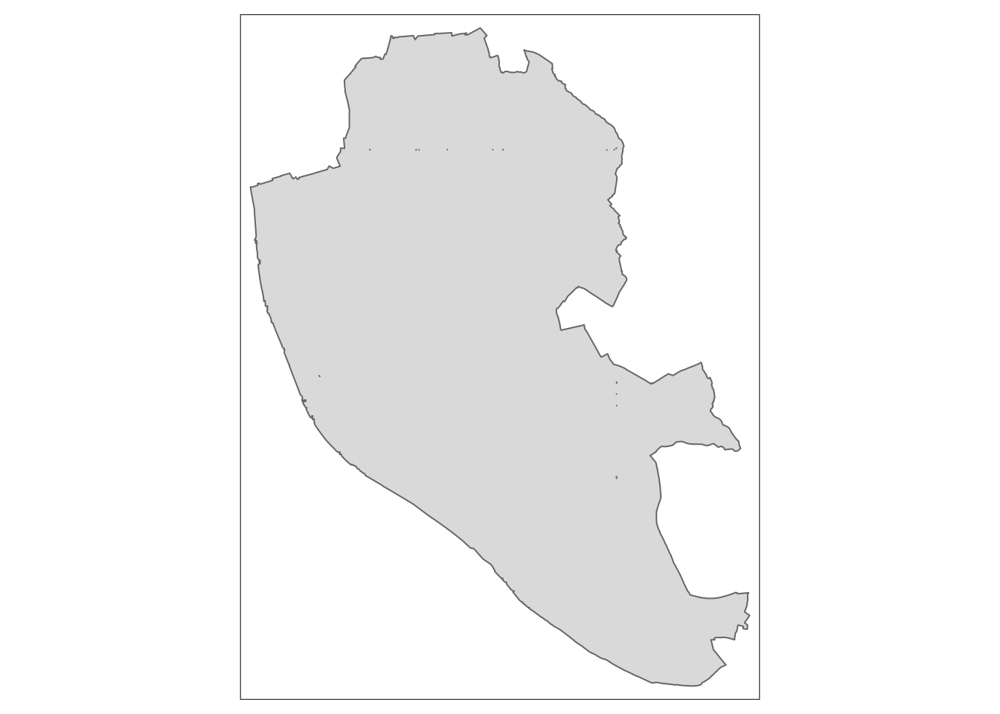
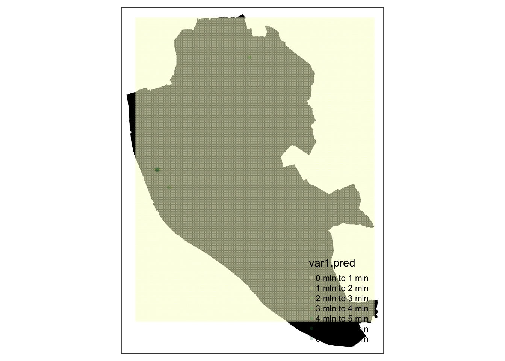
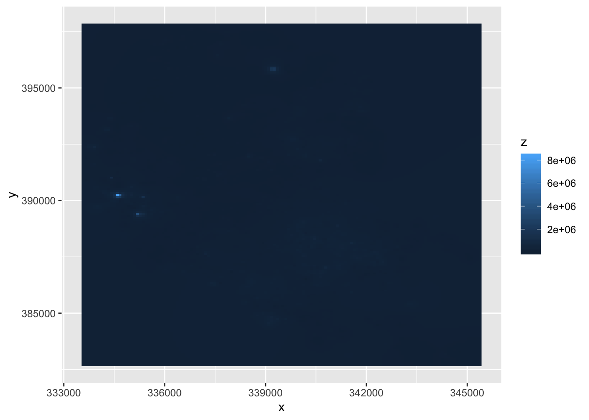

Chapter 7 Spatial Interpolation
The previous section demonstrates how to visualize the distribution of a set of spatial objects represented as points. In particular, given a bunch of house transactions, it shows how one can effectively visualize their distribution over space and get a sense of the density of occurrences. Such visualization, because it is based on KDE, is based on a smooth continuum, rather than on a discrete approach (as a choropleth would do, for example).
Many times however, we are not particularly interested in learning about the density of occurrences, but about the distribution of a given value attached to each location. Think for example of weather stations and temperature: the location of the stations is no secret and rarely changes, so it is not of particular interest to visualize the density of stations; what we are usually interested instead is to know how temperature is distributed over space, given we only measure it in a few places. One could argue the example we have been working with so far, house price transactions, fits into this category as well: although where house are sold may be of relevance, more often we are interested in finding out what the “surface of price” looks like. Rather than where are most houses being sold? we usually want to know where the most expensive or most affordable houses are located.
In cases where we are interested in creating a surface of a given value, rather than a simple density surface of occurrences, KDE cannot help us. In these cases, what we are interested in is spatial interpolation, a family of techniques that aim at exactly that: creating continuous surfaces for a particular phenomenon (e.g. temperature, house prices) given only a finite sample of observations. Spatial interpolation is a large field of research that is still being actively developed and that can involve a substantial amount of mathematical complexity in order to obtain the most accurate estimates possible4. In this session, we will introduce the simplest possible way of interpolating values, hoping this will give you a general understanding of the methodology and, if you are interested, you can check out further literature. For example, (???) or (???) are hard but good overviews.
7.1 Inverse Distance Weight (IDW) interpolation
The technique we will cover here is called Inverse Distance Weighting, or IDW for convenience. (???) offer a good description:
In the inverse distance weighting (IDW) approach to interpolation, to estimate the value of \(z\) at location \(x\) a weighted mean of nearby observations is taken […]. To accommodate the idea that observations of \(z\) at points closer to \(x\) should be given more importance in the interpolation, greater weight is given to these points […]
— Page 204
The math5 is not particularly complicated and may be found in detail elsewhere (the reference above is a good starting point), so we will not spend too much time on it. More relevant in this context is the intuition behind. Essentially, the idea is that we will create a surface of house price by smoothing many values arranged along a regular grid and obtained by interpolating from the known locations to the regular grid locations. This will give us full and equal coverage to soundly perform the smoothing.
Enough chat, let’s code.
From what we have just mentioned, there are a few steps to perform an IDW spatial interpolation:
- Create a regular grid over the area where we have house transactions.
- Obtain IDW estimates for each point in the grid, based on the values of \(k\) nearest neighbors.
- Plot a smoothed version of the grid, effectively representing the surface of house prices.
Let us go in detail into each of them6. First, let us set up a grid:
That’s it, we’re done! The function spsample hugely simplifies the task by taking a spatial object and returning the grid we need. Not a couple of additional arguments we pass: type allows us to get a set of points that are uniformly distributed over space, which is handy for the later smoothing; n controls how many points we want to create in that grid.
On to the IDW. Again, this is hugely simplified by gstat:
## [inverse distance weighted interpolation]Boom! We’ve got it. Let us pause for a second to see how we just did it. First, we pass price ~ 1. This specifies the formula we are using to model house prices. The name on the left of ~ represents the variable we want to explain, while everything to its right captures the explanatory variables. Since we are considering the simplest possible case, we do not have further variables to add, so we simply write 1. Then we specify the original locations for which we do have house prices (our original db object), and the points where we want to interpolate the house prices (the liv.grid object we just created above). One more note: by default, idw.hp uses all the available observations, weighted by distance, to provide an estimate for a given point. If you want to modify that and restrict the maximum number of neighbors to consider, you need to tweak the argument nmax, as we do above by using the 150 neares observations to each point7.
The object we get from idw is another spatial table, just as db, containing the interpolated values. As such, we can inspect it just as with any other of its kind. For example, to check out the top of the estimated table:
## var1.pred var1.var
## 1 158057.8 NA
## 2 158167.7 NA
## 3 158280.4 NA
## 4 158395.9 NA
## 5 158514.4 NA
## 6 158636.0 NAThe column we will pay attention to is var1.pred. And to see the locations for which those correspond:
## x1 x2
## [1,] 333563.7 382722.5
## [2,] 333648.7 382722.5
## [3,] 333733.7 382722.5
## [4,] 333818.6 382722.5
## [5,] 333903.6 382722.5
## [6,] 333988.5 382722.5So, for a hypothetical house sold at the location in the first row of idw.hp@coords (expressed in the OSGB coordinate system), the price we would guess it would cost, based on the price of houses sold nearby, is the first element of column var1.pred in idw.hp@data.
7.2 A surface of housing prices
Once we have the IDW object computed, we can plot it to explore the distribution, not of house transactions in this case, but of house price over the geography of Liverpool. The easiest way to do this is by quickly calling the command spplot:

However, this is not entirely satisfactory for a number of reasons. Let us get an equivalen plot with the package tmap, which streamlines some of this and makes more aesthetically pleasant maps easier to build as it follows a “ggplot-y” approach.
## OGR data source with driver: ESRI Shapefile
## Source: "/home/jovyan/work/data/house_transactions", layer: "liv_outline"
## with 1 features
## It has 1 fieldsThe shape we will overlay looks like this:

Now let’s give it a first go!
#
p = tm_shape(liv.otl) + tm_fill(col='black', alpha=1) +
tm_shape(idw.hp) +
tm_symbols(col='var1.pred', size=0.1, alpha=0.25,
border.lwd=0., palette='YlGn')
p
The last two plots, however, are not really a surface, but a representation of the points we have just estimated. To create a surface, we need to do an interim transformation to convert the spatial object idw.hp into a table that a “surface plotter” can understand.
Now we are ready to plot the surface as a contour:
Figure 7.1: Contour of prices in Liverpool
Which can also be shown as a filled contour:

The problem here, when compared to the KDE above for example, is that a few values are extremely large:
Figure 7.2: Skewness of prices in Liverpool
Let us then take the logarithm before we plot the surface:
xyz['lz'] <- log(xyz$z)
base <- ggplot(data=xyz, aes(x=x, y=y))
surface <- base +
geom_raster(aes(fill=lz),
show.legend = F)
surfaceFigure 7.3: Surface of log-prices in Liverpool
Now this looks better. We can start to tell some patterns. To bring in context, it would be great to be able to add a basemap layer, as we did for the KDE. This is conceptually very similar to what we did above, starting by reprojecting the points and continuing by overlaying them on top of the basemap. However, technically speaking it is not possible because ggmap –the library we have been using to display tiles from cloud providers– does not play well with our own rasters (i.e. the price surface). At the moment, it is surprisingly tricky to get this to work, so we will park it for now. However, developments such as the sf project promise to make this easier in the future8.
7.3 “What should the next house’s price be?”
The last bit we will explore in this session relates to prediction for new values. Imagine you are a real state data scientist and your boss asks you to give an estimate of how much a new house going into the market should cost. The only information you have to make such a guess is the location of the house. In this case, the IDW model we have just fitted can help you. The trick is realizing that, instead of creating an entire grid, all we need is to obtain an estimate of a single location.
Let us say, the house is located on the coordinates x=340000, y=390000 as expressed in the GB National Grid coordinate system. In that case, we can do as follows:
pt <- SpatialPoints(cbind(x=340000, y=390000),
proj4string = db@proj4string)
idw.one <- idw(price ~ 1, locations=db, newdata=pt)## [inverse distance weighted interpolation]## class : SpatialPointsDataFrame
## features : 1
## extent : 340000, 340000, 390000, 390000 (xmin, xmax, ymin, ymax)
## crs : +proj=tmerc +lat_0=49 +lon_0=-2 +k=0.9996012717 +x_0=400000 +y_0=-100000 +datum=OSGB36 +units=m +no_defs +ellps=airy +towgs84=446.448,-125.157,542.060,0.1502,0.2470,0.8421,-20.4894
## variables : 2
## names : var1.pred, var1.var
## value : 157099.029513871, NAAnd, as show above, the estimated value is GBP157,0999.
Using this predictive logic, and taking advantage of Google Maps and its geocoding capabilities, it is possible to devise a function that takes an arbitrary address in Liverpool and, based on the transactions occurred throughout 2014, provides an estimate of what the price for a property in that location could be.
how.much.is <- function(address, print.message=TRUE){
# Convert the address into Lon/Lat coordinates
# NOTE: this now requires an API key
# https://github.com/dkahle/ggmap#google-maps-and-credentials
ll.pt <- geocode(address)
# Process as spatial table
wgs84 <- CRS("+proj=longlat +datum=WGS84 +ellps=WGS84 +towgs84=0,0,0")
ll.pt <- SpatialPoints(cbind(x=ll.pt$lon, y=ll.pt$lat),
proj4string = wgs84)
# Transform Lon/Lat into OSGB
pt <- spTransform(ll.pt, db@proj4string)
# Obtain prediction
idw.one <- idw(price ~ 1, locations=db, newdata=pt)
price <- idw.one@data$var1.pred
# Return predicted price
if(print.message==T){
writeLines(paste("\n\nBased on what surrounding properties were sold",
"for in 2014 a house located at", address, "would",
"cost", paste("GBP", round(price), ".", sep=''), "\n\n"))
}
return(price)
}Ready to test!
There is also an important economic incentive to do this: some of the most popular applications are in the oil and gas or mining industries. In fact, the very creator of this technique, Danie G. Krige, was a mining engineer. His name is usually used to nickname spatial interpolation as kriging.↩︎
Essentially, for any point \(x\) in space, the IDW estimate for value \(z\) is equivalent to \(\hat{z} (x) = \dfrac{\sum_i w_i z_i}{\sum_i w_i}\) where \(i\) are the observations for which we do have a value, and \(w_i\) is a weight given to location \(i\) based on its distance to \(x\).↩︎
For the relevant calculations, we will be using the
gstatlibrary.↩︎Have a play with this because the results do change significantly. Can you reason why?↩︎
BONUS if you can figure out a way to do it yourself!↩︎
PRO QUESTION Is that house expensive or cheap, as compared to the other houses sold in this dataset? Can you figure out where the house is?↩︎